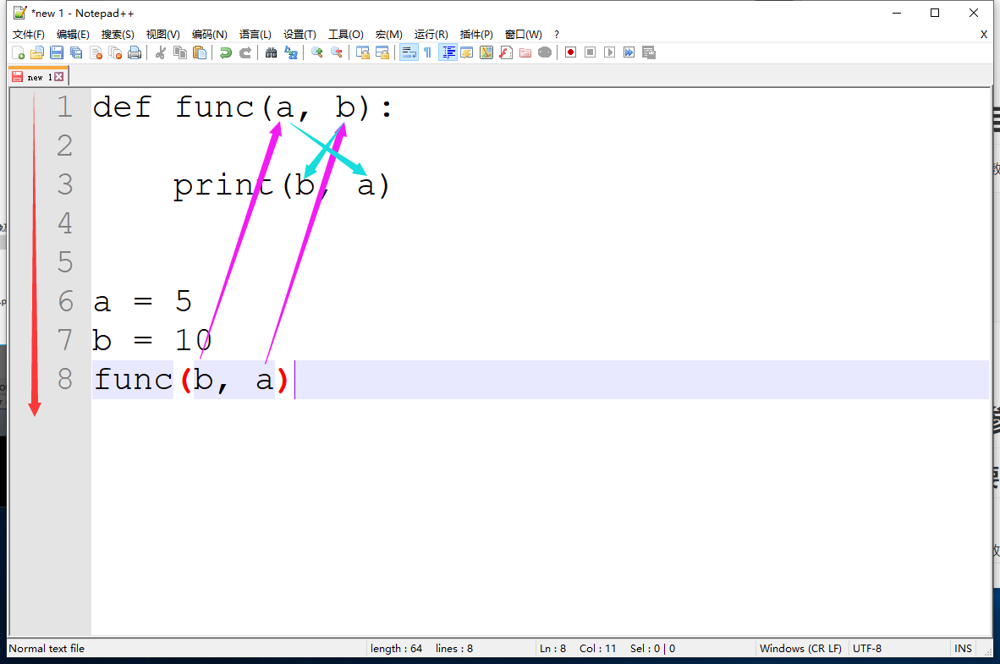
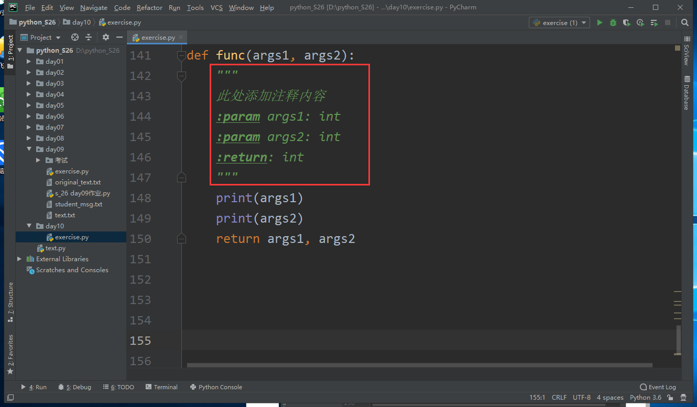
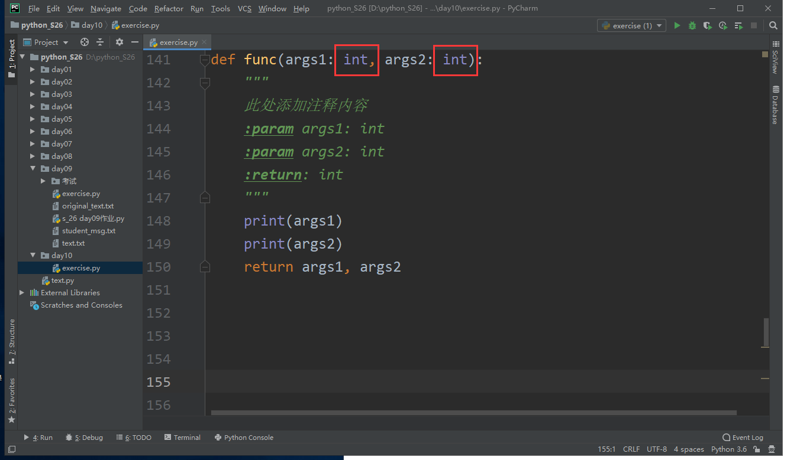
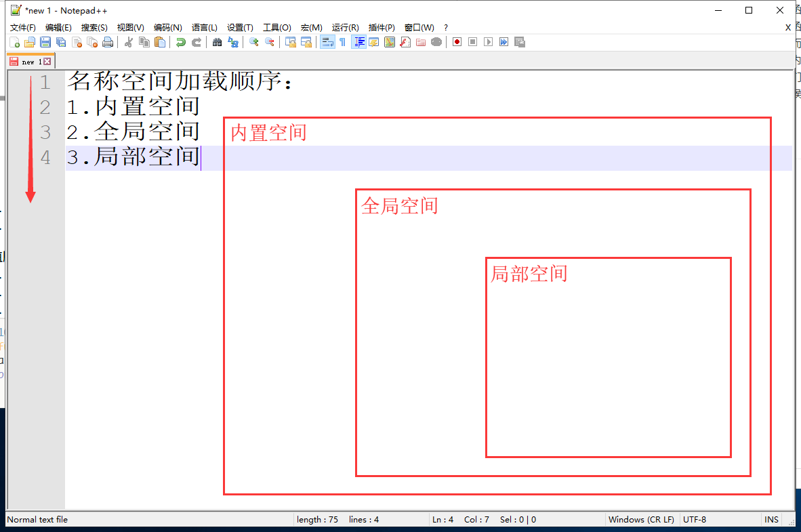
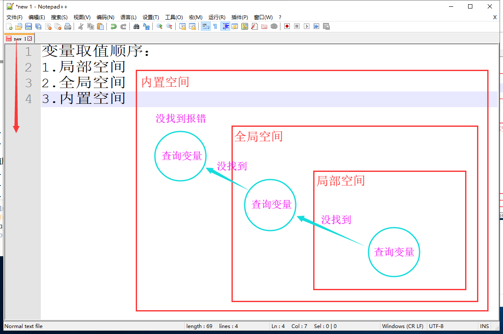
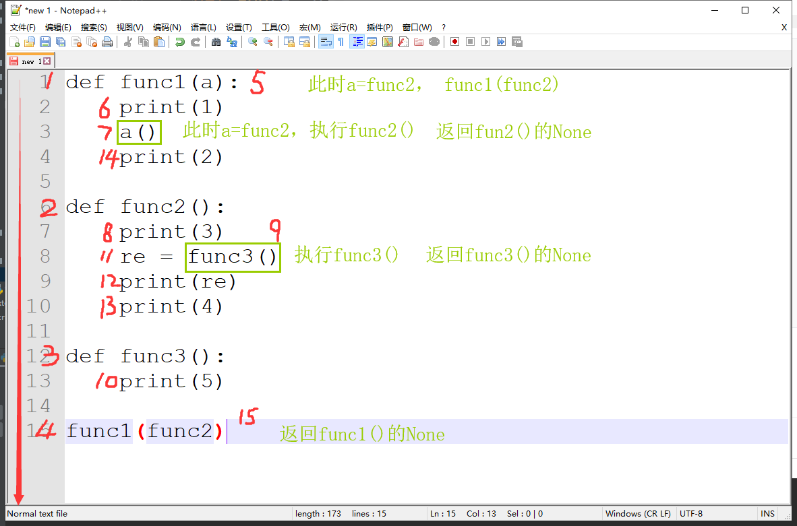
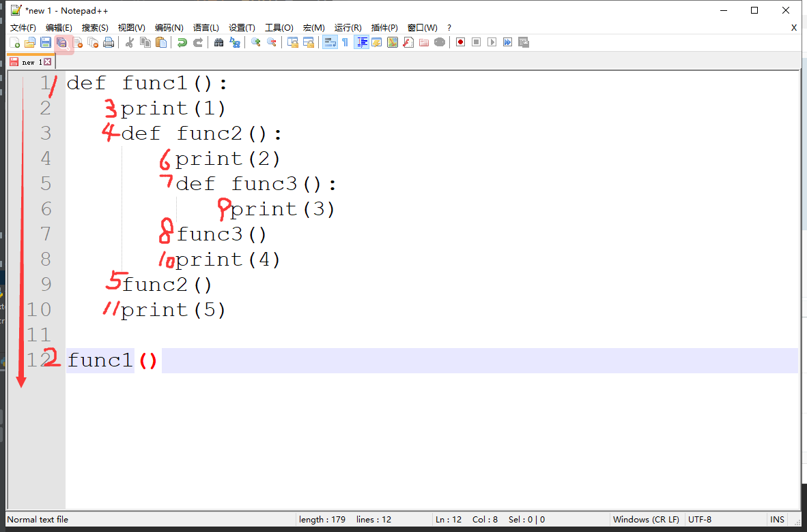

先看一个函数定义和函数调用
def func(a, b):
print(b, a)
a = 5
b = 10
func(b, a) # 5 10
传参的过程按照参数类型进行，位置参数按顺序一一对应传参，与变量名是什么无关
而参数分配是函数自己的事，函数体属于函数，分配参数的过程要按照变量名分配
先来看一个例子：
def eat(zhushi, huncai, sucai, tang, tiandian):
print("我要吃:", zhushi, huncai, sucai, tang, tiandian)
eat("大米饭", "红烧肉", "烧茄子", "番茄汤", "慕斯")
# 我要吃: 米饭 红烧肉 烧茄子 番茄汤 慕斯def eat(zhushi, huncai, sucai, tang, tiandian):
print("我要吃:", zhushi, huncai, sucai, tang, tiandian)
eat("小花卷", "黄瓜炒鸡蛋")
# TypeError: eat() missing 3 required positional arguments: 'sucai', 'tang', and 'tiandian'动态传参可以给函数传入不定量的参数，以元组、字典的方式打包起来，这就解决了我们填入参数是数量不定引发的error，下面我们来看看动态传参具体的方法
动态位置参数（动态接收位置参数）
def eat(zhushi, tang): # 按照位置接收参数(形参)
print(f"主食:{zhushi} 汤:{tang}")
eat("米饭", "番茄蛋花汤") # 位置参数(实参)
# 主食:米饭 汤:番茄蛋花汤*，表示可接收任意数量的形参，以元组存储def eat(*food): # 参数前加一个星号，表示动态接收位置参数
print(food)
eat("米饭", "番茄蛋花汤") # 可以填写任意数量参数
# ('米饭', '番茄蛋花汤')*args来表示，只是一个行业内的规范，也可以用其他变量名定义但不建议使用def eat(*args): # 一般用*args表示动态位置参数
print(args)
eat("米饭", "番茄蛋花汤") # 可以填写任意数量参数
# ('米饭', '番茄蛋花汤')结合之前两种形参（位置参数、默认值参数）共同分析
位置参数 + 动态位置参数
def eat(zhushi, *food):
print(zhushi, food)
eat("米饭", "红烧肉", "排骨", "烧鸡")
# 米饭 ('红烧肉', '排骨', '烧鸡')def eat(*food, zhushi):
print(food, zhushi)
eat("米饭", " 红烧肉", "排骨", "烧鸡")
# TypeError: eat() missing 1 required keyword-only argument: 'zhushi'默认值参数 + 动态位置参数
def eat(*food, zhushi="米饭"):
print(food, zhushi)
eat("回锅肉", "红烧肉", "翡翠白玉汤")
# ('回锅肉', '红烧肉', '翡翠白玉汤') 米饭
def eat(zhushi="米饭", *food):
print(zhushi, food)
eat("米饭", "回锅肉", "红烧肉", "翡翠白玉汤") # 默认值参数没有意义
# 米饭 ('回锅肉', '红烧肉', '翡翠白玉汤')
位置参数 + 默认值参数 + 动态位置参数
def eat(zhushi, *food, tang="番茄蛋花汤"):
print(zhushi, food, tang)
eat("米饭", "红烧肉", "排骨", "烧鸡")
# 米饭 ('红烧肉', '排骨', '烧鸡') 番茄蛋花汤
动态关键字参数（动态接收关键字参数）
*可以接收任意数量的位置参数，但是无法接收任意数量的关键字参数，在形参前加两个星号**就可以接受任意数量的关键字参数，以字典存储def eat(zhushi, **cai):
print(f"主食:{zhushi} 菜:{cai}")
eat("米饭", cai1="红烧肉", cai2="可乐鸡翅")
主食:米饭 菜:{'cai1': '红烧肉', 'cai2': '可乐鸡翅'}
**kwargs来表示，只是一个行业内的规范，也可以用其他变量名定义但不建议使用def eat(zhushi, **kwargs):
print(f"主食:{zhushi} 菜:{kwargs}")
eat("米饭", cai1="红烧肉", cai2="可乐鸡翅")
主食:米饭 菜:{'cai1': '红烧肉', 'cai2': '可乐鸡翅'}
结合之前三种形参（位置参数、动态位置参数、默认值参数）共同分析
def func(a, b, c):
print(a, b, c)
func(1, b=2, 3)
# SyntaxError: positional argument follows keyword argument
def eat(zhushi, *args, tang="番茄蛋花汤", **kwargs):
print(f"主食:{zhushi} 甜品:{args} 汤:{tang} 菜:{kwargs}")
eat("米饭", "慕斯", "布丁", recai="可乐鸡翅", liangcai="大拌菜")
# 主食:米饭 甜品:('慕斯', '布丁') 汤:番茄蛋花汤 菜:{'recai': '可乐鸡翅', 'liangcai': '大拌菜'}
形参的最终顺序：(重要)
星号*的作用
def func(a, b, *args): # 将我传入的3，4，5聚合成一个元组
print(a, b, args)
func(1, 2, 3, 4, 5) # 1 2 (3, 4, 5)
def func(a, b, *args): # 将我传入的3，4，5聚合成一个元组
print(a, b, *args) # 将元组打散成元素输出
func(1, 2, 3, 4, 5) # 1 2 3 4 5
无敌传参
def func(*args, **kwargs):
print(args, kwargs)
func(1, 2, 3, k1=v1, k2=v2)
# (1, 2, 3) {'k1': 'v1', 'k2': 'v2'}
在函数体的第一行用多行注释""" """，pycharm在函数中添加注释默认出现函数所用到的所有变量
def func(args1, args2):
"""
:param args1: int
:param args2: int
:return: int
"""
print(args1)
print(args2)
return args1, args2

在函数定义的时候，形参后面可以加冒号并写出建议传入的数据类型
def func(args1: int, args2: int):
"""
此处添加注释内容
:param args1: int
:param args2: int
:return: int
"""
print(args1)
print(args2)
return args1, args2

查看函数的注释
函数名.__doc__，若无注释返回Nonedef func(args1, args2):
"""
进行加法运算
:param args1: int
:param args2: int
:return: int
"""
return args1 + args2
print(func.__doc__)
运行结果：
进行加法运算
:param args1: int
:param args2: int
:return: int
查看函数的名字
函数名.__name__def func(args1, args2):
"""
进行加法运算
:param args1: int
:param args2: int
:return: int
"""
return args1 + args2
add = func
print(add.__name__) # 运行结果：func
内置空间：存放python解释器为我们提供的名字，len、print、global等等
全局空间：用来存放py文件顶格运行时声明的变量
局部空间：用来存放在函数运行时声明的变量
名称空间加载顺序：

变量取值顺序：

全局作用域：整个文件的任何位置都可以使用
globals()函数可以查看全局作用域中的变量和函数信息a = 10
b = 20
def func(args1, args2):
print(args1)
print(args2)
print(globals())
return None
func(30, 40)
运行结果：
{'__name__': '__main__', '__doc__': None, '__package__': None, '__loader__': <_frozen_importlib_external.SourceFileLoader object at 0x000001B61F2786D8>, '__spec__': None, '__annotations__': {}, '__builtins__': <module 'builtins' (built-in)>, '__file__': 'D:/python_S26/day10/exercise.py', '__cached__': None, 'a': 10, 'b': 20, 'func': <function func at 0x000001B61D671EA0>}
局部作用域：在函数内部可以使用
locals()函数可以查看当前作用域中的变量和函数信息（建议查看局部）a = 10
b = 20
def func(args1, args2):
print(args1)
print(args2)
print(locals())
return None
func(30, 40)
运行结果：
30
40
{'args2': 40, 'args1': 30}
函数名可以当作值，赋值给另一个变量
def func():
print("zxd")
name = func # 函数名赋值给另一个变量
print(func)
print(name)
name()
运行结果：
<function func at 0x000002161A261EA0>
<function func at 0x000002161A261EA0>
zxd
函数名可以当作另一个函数的参数来使用
def func():
print("zxd")
def name(args):
print(args) # <function func at 0x00000299B5811EA0>
args()
name(func)
运行结果：
<function func at 0x00000299B5811EA0>
zxd
函数名可以当作另一个函数的返回值来使用
def name():
print("zxd")
def func():
return name
func()()
运行结果：
zxd
函数名可以当作元素存储在容器中
def login():
print("登录")
def register():
print("注册")
def look():
print("浏览商品")
def buy():
print("购买商品")
msg = """
1.注册
2.登录
3.浏览商品
4.购买商品
请选择序号:"""
dic_func = {
"1": register,
"2": login,
"3": look,
"4": buy,
}
while True:
num = input(msg)
if num in dic_func.keys():
dic_func[num]()
else:
print("输入错误！")
函数参数作为另一个函数的参数，从而插入另一个函数中
看一个例子：
def func1(a):
print(1)
a()
print(2)
def func2():
print(3)
re = func3()
print(re)
print(4)
def func3():
print(5)
func1(func2)
运行结果：
1 3 5 None 4 2
运行顺序

函数内部嵌套函数
看一个例子
def func1():
print(1)
def func2():
print(2)
def func3():
print(3)
func3()
print(4)
func2()
print(5)
func1()
运行结果：
1 2 3 4 5
运行顺序

全局中的变量在函数内部只有使用权，可以拿来用，但是不能更改
num = 10
def func():
num = num + 1
print(num)
func()
print(num)
# UnboundLocalError: local variable 'num' referenced before assignment
如果想在局部中修改全局变量，必须先用global声明要修改的全局变量
num = 10
def func():
global num
num = num + 1
print(num) # 11
func()
print(num) # 11
在函数中使用了global声明了变量，但全局空间中并没有这个变量时，global会在全局空间中开辟这个变量
def func():
global num
num = 10
print(num) # 10
func()
print(num) # 10
总结：
nonlocal修改离nonlocal最近的上一层名称空间的变量，但只修改局部空间中的变量
num = 10
def func1():
num = 20
def func2():
num = 30
def func3():
nonlocal num
num += 1
print(num)
func3()
print(num)
func2()
print(num)
func1()
print(num)
运行结果：
31 31 20 10
nonlocal声明的变量如果是全局空间中的变量就会报错，并且nonlocal不会创建变量
num = 10
def func1():
def func2():
def func3():
nonlocal num # 局部空间内没有变量num
print(num)
func3()
print(num)
func2()
print(num)
func1()
print(num)
运行结果：
SyntaxError: no binding for nonlocal 'num' found
当前空间如果有变量，在去用nonlocal声明该变量，会报错，nonlocal只能声明上一层名称空间的变量
num = 10
def func1():
def func2():
def func3():
num = 10
nonlocal num #
print(num)
func3()
print(num)
func2()
print(num)
func1()
print(num)
运行结果：
SyntaxError: name 'num' is assigned to before nonlocal declaration